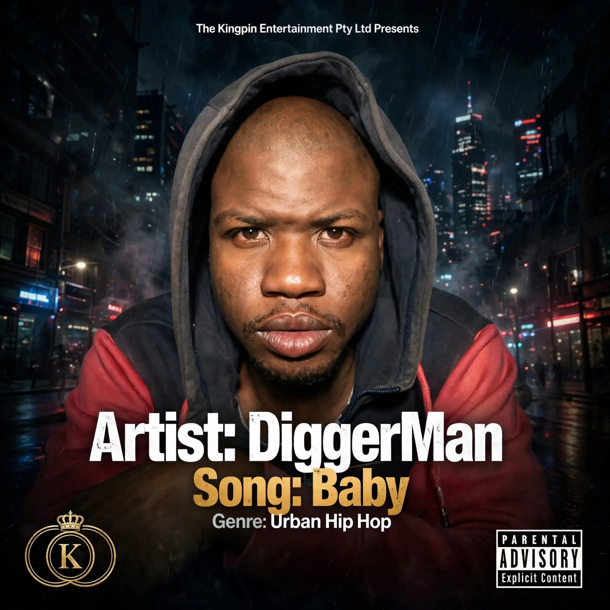

Genesis Flow
A foundational series in the DiggerMan catalogue documenting an evolving sound and identity.
SeriesIndependent
Music. Passion. Legacy. Independent recording artist, songwriter and creative storyteller rooted in Riverlea, West Johannesburg.
Listen on SpotifyMusicBrainzOfficial Press KitDiggerMan is the artist identity of Dico Nhlakanipho Dube, a South African independent recording artist, songwriter and creative storyteller from Johannesburg. His work connects music with place, memory, everyday life and ambition, with Riverlea forming an important part of his creative perspective.
Operating through The Kingpin Entertainment Pty Ltd, DiggerMan is building an independent catalogue and a long-term archive of music, visual work and community-rooted stories.
“Some stories are real… they just sound like fairy tales.”
A foundational series in the DiggerMan catalogue documenting an evolving sound and identity.
SeriesIndependentAn EP chapter in the growing catalogue, extending DiggerMan's creative world.
EP2026A release connected to the artist's place-based identity and West Johannesburg story.
EPRiverleaA clean presenter-style image area designed for artist portraits, cover art, music photography, video stills and future press images. Existing approved imagery is retained.


Historical music-video material and selected moments from DiggerMan's early creative period.
Community-rooted visual and cultural material connected to Riverlea and West Johannesburg.
Biography, official links, release information and media-ready reference material.
Artist: DiggerMan / Dico Nhlakanipho Dube
Base: Riverlea / West Johannesburg, South Africa
MusicBrainz Artist ID: 56a9fd42-e71b-4292-93b2-6662e1588503
Media, collaborations, bookings and professional enquiries:
Presented by The Kingpin Entertainment Pty Ltd.